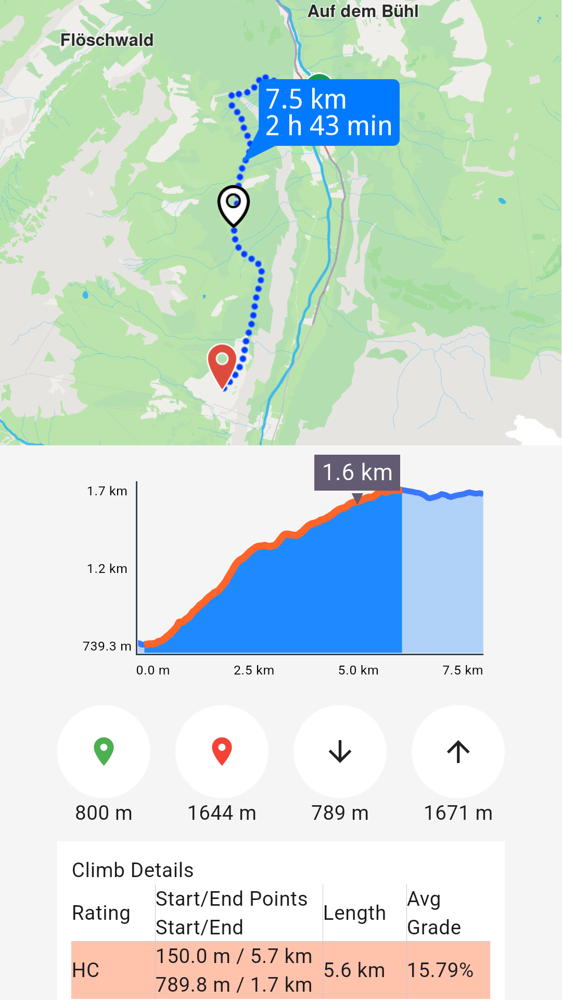
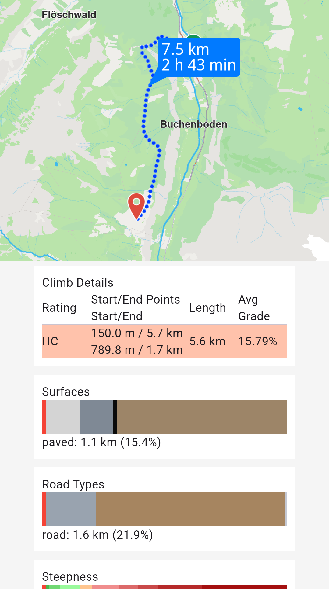
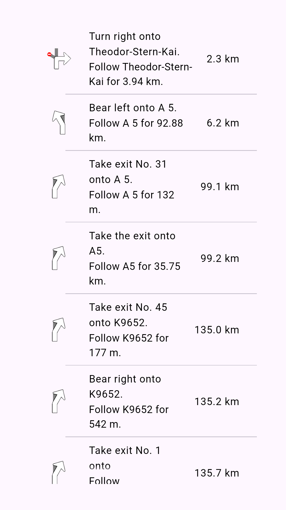

Get Started with Routing¶
This guide explains how to calculate routes, customize routing preferences, retrieve turn-by-turn instructions, and access detailed route information including terrain profiles and traffic events.
Here’s a quick overview of what you can do with routing:
- Calculate routes from a start point to a destination.
- Include intermediary waypoints for multi-stop routes.
- Compute range routes to determine areas reachable within a specific range.
- Plan routes over predefined tracks.
- Customize routes with preferences like route types, restrictions, and more.
- Retrieve maneuvers and turn-by-turn instructions.
- Access detailed route profiles for further analysis.
Calculate Routes¶
Calculate a navigable route between a start point and destination. The route can be used for navigation or simulation.
// Define the departure.
final departureLandmark =
Landmark.withLatLng(latitude: 48.85682, longitude: 2.34375);
// Define the destination.
final destinationLandmark =
Landmark.withLatLng(latitude: 50.84644, longitude: 4.34587);
// Define the route preferences (all default).
final routePreferences = RoutePreferences();
TaskHandler? taskHandler = RoutingService.calculateRoute(
[departureLandmark, destinationLandmark], routePreferences,
(err, routes) {
if (err == GemError.success) {
showSnackbar("Number of routes: ${routes.length}");
} else if (err == GemError.cancel) {
showSnackbar("Route computation canceled");
} else {
showSnackbar("Error: $err");
}
});📝 Note: The
RoutingService.calculateRoutemethod returnsnullonly when the computation fails to initiate. In such cases, callingRouteService.cancelRoute(taskHandler)is not possible. Error details are delivered through theonCompletefunction.
The callback function's err parameter can return these values:
| Value | Significance |
|---|---|
GemError.success |
Successfully completed |
GemError.cancel |
Cancelled by the user |
GemError.waypointAccess |
Couldn't be found with the current preferences |
GemError.connectionRequired |
If allowOnlineCalculation = false in the routing preferences and the calculation can't be done on the client side due to missing data |
GemError.expired |
Calculation can't be done on client side due to missing necessary data and the client world map data version is no longer supported by the online routing service |
GemError.routeTooLong |
Routing was executed on the online service and the operation took too much time to complete (usually more than 1 min, depending on the server overload state) |
GemError.invalidated |
The offline map data changed ( offline map downloaded, erased, updated ) during the calculation |
GemError.noMemory |
Routing engine couldn't allocate the necessary memory for the calculation |
Cancel an ongoing route computation if needed:
RoutingService.cancelRoute(taskHandler);err = GemError.cancel.
Retrieve Time and Distance Information¶
Access estimated time of arrival (ETA), distance, and traffic details for computed routes.
Get time and distance information using the Route.getTimeDistance method:
TimeDistance td = route.getTimeDistance(activePart: false);
final totalDistance = td.totalDistanceM;
// same with:
//final totalDistance = td.unrestrictedDistanceM + td.restrictedDistanceM;
final totalDuration = td.totalTimeS;
// same with:
//final totalDuration = td.unrestrictedTimeS + td.restrictedTimeS;
// by default activePart = true
TimeDistance remainTd = route.getTimeDistance(activePart: true);
final totalRemainDistance = remainTd.totalDistanceM;
final totalRemainDuration = remainTd.totalTimeS;activePart to false to compute time and distance for the entire route, or true (default) for only the remaining portion.
Unrestricted refers to public property routes, while restricted refers to private property routes. Time is measured in seconds and distance in meters.
Access traffic events¶
Retrieve traffic event details for the route:
List<RouteTrafficEvent> trafficEvents = route.trafficEvents;
for (final event in trafficEvents) {
RouteTransportMode transportMode = event.affectedTransportModes;
String description = event.description;
TrafficEventClass eventClass = event.eventClass;
TrafficEventSeverity eventSeverity = event.eventSeverity;
Coordinates from = event.from;
Coordinates to = event.to;
bool isRoadBlock = event.isRoadblock;
}Display Routes On The Map¶
Routes are not automatically displayed after calculation. Visualize routes on the map using the display methods.
Refer to the display routes on maps guide for visualization and customization options.
Get the Terrain Profile¶
When computing the route we can choose to also build the TerrainProfile for the route.
In order to do that RoutePreferences must specify we want to also generate the BuildTerrainProfile:
final routePreferences = RoutePreferences(
buildTerrainProfile: const BuildTerrainProfile(enable: true),
);🚨 Alert: Set
BuildTerrainProfilewith enable flag to true in the preferences forcalculateRouteto retrieve terrain profile data.
Access elevation and terrain data from the profile:
RouteTerrainProfile? terrainProfile = route.terrainProfile;
if (terrainProfile != null) {
double minElevation = terrainProfile.minElevation;
double maxElevation = terrainProfile.maxElevation;
int minElevDist = terrainProfile.minElevationDistance;
int maxElevDist = terrainProfile.maxElevationDistance;
double totalUp = terrainProfile.totalUp;
double totalDown = terrainProfile.totalDown;
// elevation at 100m from the route start
double elevation = terrainProfile.getElevation(100);
for (final section in terrainProfile.roadTypeSections) {
RoadType roadType = section.type;
int startDistance = section.startDistanceM;
}
for (final section in terrainProfile.surfaceSections) {
SurfaceType surfaceType = section.type;
int startDistance = section.startDistanceM;
}
for (final section in terrainProfile.climbSections) {
Grade grade = section.grade;
double slope = section.slope;
int startDistanceM = section.startDistanceM;
int endDistanceM = section.endDistanceM;
}
List<double> categs = [-16, -10, -7, -4, -1, 1, 4, 7, 10, 16];
List<SteepSection> steepSections = terrainProfile.getSteepSections(categs);
for (final section in steepSections) {
int categ = section.categ;
int startDistanceM = section.startDistanceM;
}
}RoadType values: motorways, stateRoad, road, street, cycleway, path, singleTrack.
SurfaceType values: asphalt, paved, unpaved, unknown.

Route profile chart

Route profile sections
Retrieve Route Instructions¶
Access detailed turn-by-turn instructions and segment information for computed routes.
Each segment represents the route portion between consecutive waypoints and includes its own set of instructions. A route with five waypoints contains four segments, each with distinct instructions.
For public transit routes, segments represent either pedestrian paths or transit sections.
Key RouteInstruction properties:
| Field | Type | Explanation |
|---|---|---|
| traveledTimeDistance | TimeDistance | Time and distance from the beginning of the route. |
| remainingTravelTimeDistance | TimeDistance | Time and distance to the end of the route. |
| coordinates | Coordinates | The coordinates indicating the location of the instruction. |
| remainTravelTimeDistToNextWaypoint | TimeDistance | Time and distance until the next waypoint. |
| timeDistanceToNextTurn | TimeDistance | Time and distance until the next instruction. |
| turnDetails | TurnDetails | Get full details for the turn. |
| turnInstruction | String | Get textual description for the turn. |
| roadInfo | List |
Get road information. |
| hasFollowRoadInfo | bool | Check is the road has follow road information. |
| followRoadInstruction | String | Get textual description for the follow road information. |
| countryCodeISO | String | Get ISO 3166-1 alpha-3 country code for the navigation instruction. |
| exitDetails | String | Get the exit route instruction text. |
| signpostInstruction | String | Get textual description for the signpost information. |
| signpostDetails | SignpostDetails | Get extended signpost details. |
| roadInfoImg | RoadInfoImg | Get customizable road image. The user is responsible to check if the image is valid. |
| turnImg | Img | Get turn image. The user is responsible to check if the image is valid. |
| realisticNextTurnImg | AbstractGeometryImg | Get customizable image for the realistic turn information. The user is resposible to check if the image is valid. |

Turn-by-turn route instructions
Access instruction data using these RouteInstruction methods:
turnInstruction: Bear left onto A 5followRoadInstruction: Follow A 5 for 132mtraveledTimeDistance.totalDistanceM: 6.2km (after formatting)turnDetails.abstractGeometryImg.getRenderableImageBytes(renderSettings: AbstractGeometryImageRenderSettings(),size: Size(100, 100)): Instruction image or null when invalid